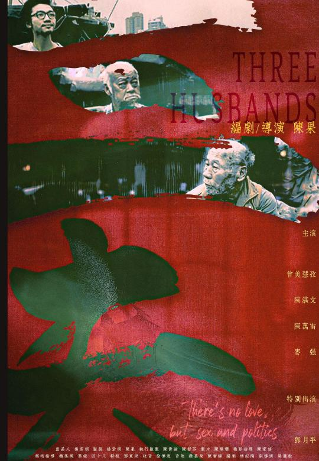
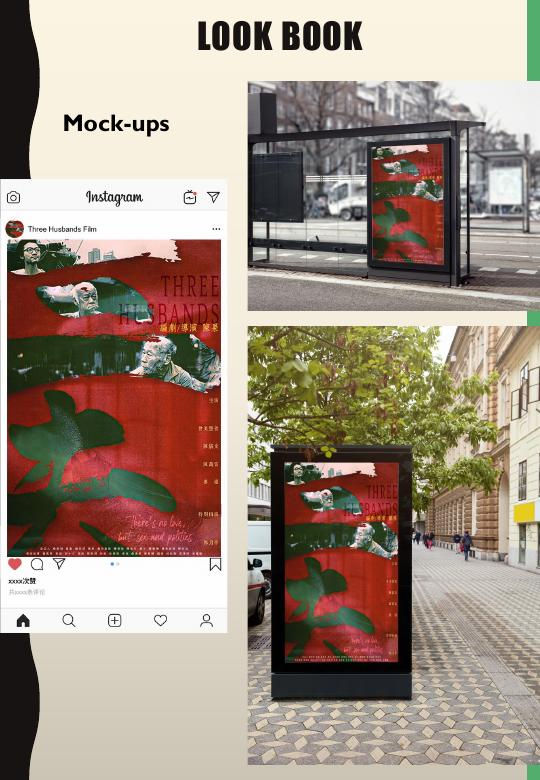
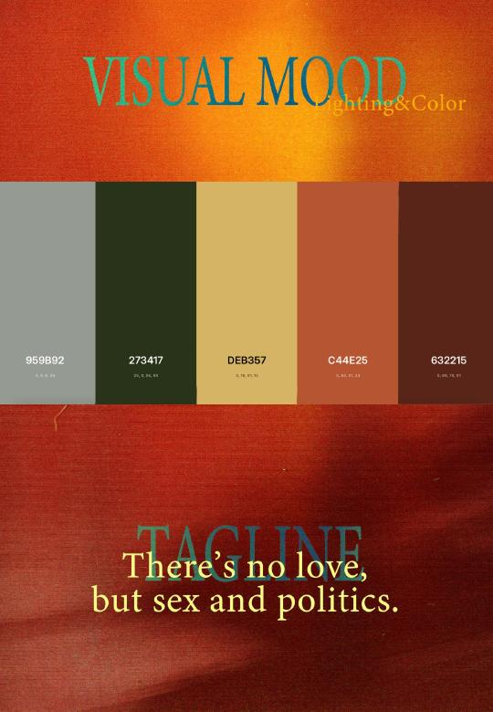

CIN317 - Film marketing
Marketing Three Husbands for Toronto audiences
A proposed campaign translating Fruit Chan's film into a focused marketing strategy and visual identity for Toronto's university, arthouse, and Hong Kong cinema communities.
The challenge
Three Husbands is an explicit Hong Kong arthouse satire combining dark humour with commentary on bodies, money, power, and a city undergoing change. The campaign needed to introduce the film to a focused Toronto audience without presenting it as a conventional romance or mainstream drama.
Strategy and visual direction give a challenging independent film a clear cultural position.
Marketing strategy
The marketing plan focuses on Cantonese-speaking viewers in the GTA, festival audiences, university students, film enthusiasts, and scholars interested in cinema, Asian studies, and politics.
The proposed campaign begins with festival exposure, then expands through cast and director interviews, influencer screenings, short social-media clips, campus advertising, film-club partnerships, and university discussion events.
Lookbook and applications
I developed the colour direction and layouts for the lookbook. The visual system uses foggy grey-green, deep green, muted gold, burnt orange, and dark red-brown to connect the campaign to the film's humid harbour setting and underground tone.

Reflection
This project connected film analysis with practical visual communication. The marketing plan required an understanding of the film's audience and themes, while the lookbook translated those ideas into colour, imagery, layout, and campaign applications.